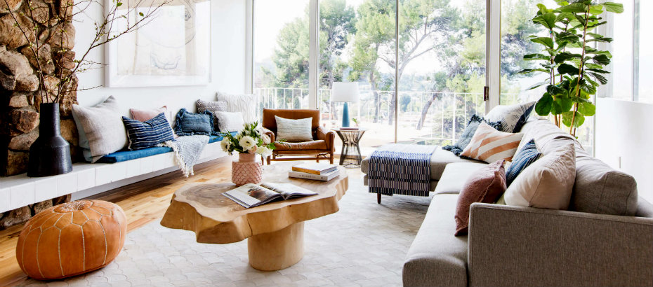

Blogs -->
How to get your Interiors done within your budgets with ease : CostFinder
Are you Looking for interior solutions for your home with the latest in home interior styles? Fresh or Refurbishing it can be prove to be an expensive affair and proper planning is essential when you’re working with a budget! Our End to end approach and team of experts came up with these tips to help you upscale your home interior without burning a hole in your wallet.
Let’s Have a plan and then Prioritize
You must be having a fairly good idea of what you would like in your home. Perhaps you would like to have new furniture or redo the fixed furniture like wardrobes and kitchen cabinets, or maybe your bathrooms need a makeover. You might also be looking at a quick refresh of your curtains and upholstery. Be specific. Whatever ideas you may have, write them all down or create some inspiration boards, and then prioritize!
Find Your Budget : Cost Finder
Once you have some idea about the totality of your project, lets play around with options and choices in CostFinder. You can set your priorities based on how much you are willing to spend in cost finder. If something is not essential right away, push it to the second phase of your budget. Have an upper limit to your budget that you cannot afford to exceed. Prediction of CostFinder will be 10-15% up or down based on the final discussion of scope designed Keeping things as realistic as possible.
Lets Make The Final Plan!
Its a preconceived notion that it’s quite difficult to manage the project and they bound to delay and ends up being a never-ending project, simply because they keep adding on new requirements as they go along! Remember that if you keep changing your mind it’s going to add to the cost of your home interiors and addition in predicted cost.